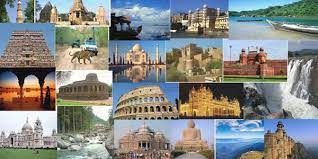
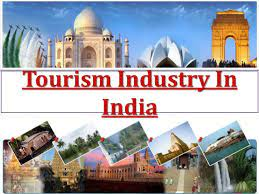
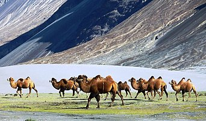
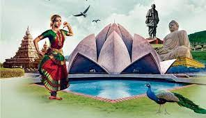
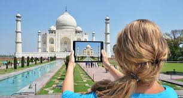
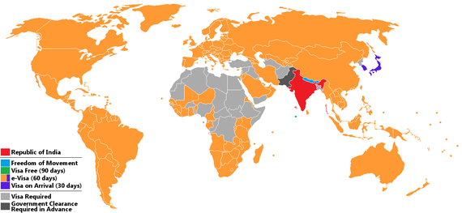

Tourism in India



--> is important for the country's economy and is growing rapidly.
--> The World Travel and Tourism Council calculated that tourism generated ₹16.91lac
--> or 9.2% of India's GDP in 2018 and supported 42.673 million jobs,
--> 8.1% of its total employment.[1] The sector is predicted to grow at an annual rate
--> of 6.9% to ₹32.05 lakh crore (US$450 billion) by 2028 (9.9% of GDP).[2] In October 2015,
--> India's medical tourism sector was estimated to be worth US$3 billion, and it is projected
--> to grow to US$7–8 billion by 2020.[3] In 2014, 184,298 foreign patients travelled to India to
--> seek medical treatment.[4]


--> Over 10.93 million foreign tourists arrived in India in 2019 compared to 10.56 million in 2018,
--> representing a growth of 3.5%.[5] Domestic tourist visits to all states and union territories
-> numbered 1,036.35 million in 2012, an increase of 16.5% from 2011.[6] In 2014, Tamil Nadu,
--> Maharashtra and Uttar Pradesh were the most popular states for tourists.[7] Delhi, Mumbai,
--> Chennai, Agra and Jaipur were the five most visited cities of India by foreign tourists during the year 2015.
--> Worldwide, Delhi is ranked 28th by the number of foreign tourist arrivals, while Mumbai is ranked 30th,
--> Chennai 43rd, Agra 45th, Jaipur 52nd and Kolkata 90th.[8]
Visa policy of India
